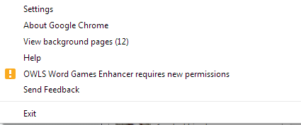

My OWL vanished! What should I do?
There are a few reasons why the owl might fly away.
- You are not currently viewing a game.
The OWL is only activated when viewing Scrabble, Lexulous or Wordscraper - The OWL was updated and no permissions were changed.
To resolve, reload the game - The OWL was updated and permission were changed.
To resolve, Either:- Review the state of the OWL in the Extensions List
and approve the necessary permissions. Enter chrome://extensions
in your address bar to view the extensions list
OR
- If your options bar turned orange follow the steps
outlined in the image sequence below, then refresh your active
games.
Click the options button 
Click OWLS Word Games Enhancer requires new permissions  Click Review permissions 
Click Re-enable 
- Review the state of the OWL in the Extensions List
and approve the necessary permissions. Enter chrome://extensions
in your address bar to view the extensions list
How can I update my extension before it is automatically installed?
To update your extension after it has been published, use the following steps.

{kind=link}
Why does the dictionary show a list of sites for some words with no definiton?
The dictionary look-up done by Google is sometimes unable to find a definition for obscure words. When this happens, references to the word on other websites will be the only results displayed.
Why does the OWL require the permissions listed below?
- Access to your data on aws.rjs.in
This is to allow retrieval of game data for Lexulous and Wordscraper
- Access to your data on scrabblefb-live2.sn.eamobile.com
This is to allow retrieval of game data for Scrabble
- Access to your data on moltengold.com
This facilitates integration with The Facebook Scrabble League
- Access to your tabs and browsing data
This allows the OWL to know when to appear based on the URL in the current tab.
- Extraction of game data at the end of the game in gcg format for Quackle or www.cross-tables.com
- Moveable Tracker that can be dragged by the user
- World Peace